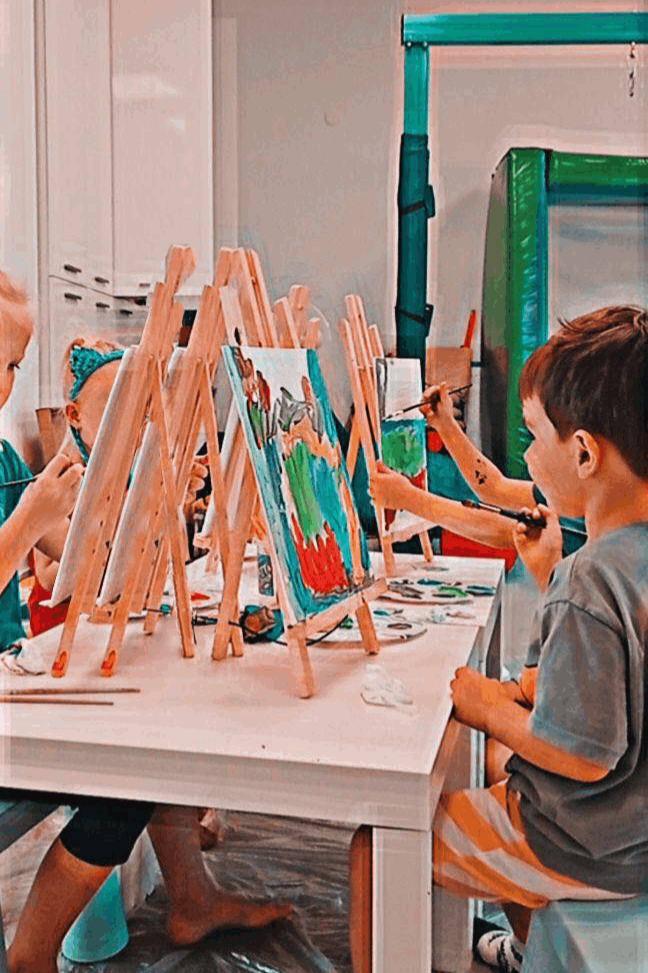

Built with Mobirise
Free Web Page Designer SoftwarePOZYTYWKA oferuje pomoc wielu specjalistów, szeroki wachlarz terapii oraz rehabilitacji, a także bogaty program zajęć dodatkowych dla dzieci.
Tworząc ofertę kierowałam się założeniami teorii inteligencji wielorakich, tak aby wspierać zainteresowania i talenty dzieci, jednocześnie zapewniając im harmonijny i wszechstronny rozwój.
Poprzez zabawę i zaplanowane działania terapeutyczne chcemy całościowo wspomagać rozwój dzieci z trudnościami w kontaktach społecznych, w nauce, z zaburzeniami koncentracji, zachowania i wielu innych trudnych sytuacjach.
Z pomocą wysokiej klasy specjalistów stworzyłam miejsce, w którym dzieci otoczone są opieką przez wykwalifikowany personel, ciepła i przyjazna atmosfera sprawią, że pociechy poczują się jak w drugim domu, a rodzic zawsze będzie mógł liczyć na wsparcie i pomoc.

- Logopeda,
- Psycholog,
- Neurologopeda,
- Surdopedagog,
- Oligofrenopedagog,
- Wczesne Wspomaganie Rozwoju Dziecka,
- Terapia ręki,
- Logorytmika,
- Sensoplastyka,
- Zajęcia kreatywne,
- Rehabilitacja metodą Vojty,
- Rehabilitacja metodą NDT Bobath,
- Integracja Sensoryczna.
Szczegółowe informacje dotyczące naszej oferty można znaleźć w zakładce "Oferta".
Built with Mobirise
Free Web Page Designer Software